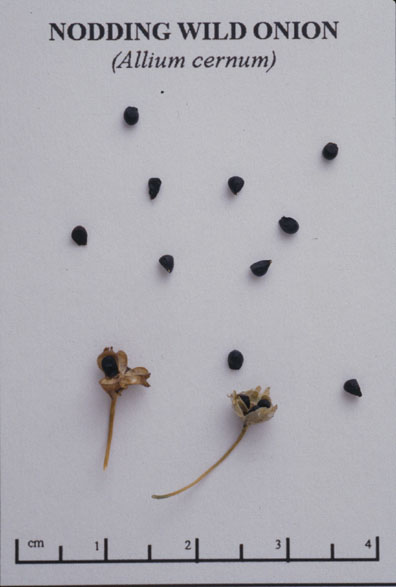
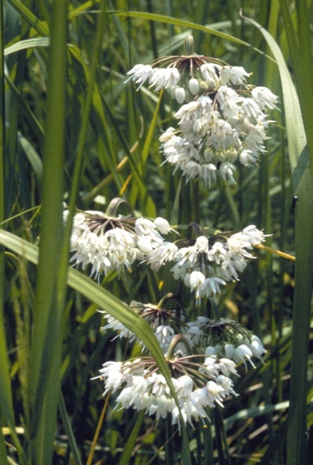
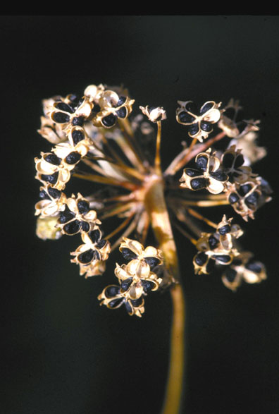

Allium Cernuum
Family: Liliaceae
Nodding Wild Onion
Swink/Wilhelm #7


Click to view larger photo
FLOWERING: July to early September.
SEED TIMING: Late September to October.
HABITAT: Moist to mesic prairies.
DIAGNOSTIC FEATURES: 18 - 20 inches high. A nodding umbel of loose florets and flat ribbon-like foliage. Florets are pale rose lavender with pinkish cast.
TO PICK: Seed is black and round when ripe, in a starburst effect. Capsules develop during 4 - 6 week period after blooming. They remain green as they develop, turning tan or straw-colored shortly before dispersing the black seed. Probably best to pick whole head when capsules are slightly green. Check to see if seeds inside are black or have at least some black coloration. Spread in open, flat container to air dry. (Because of the onion aroma you may want to do this other than in your living quarters).